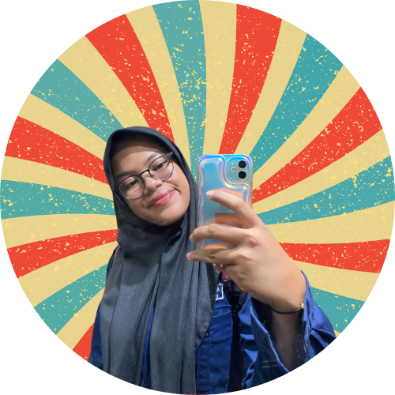
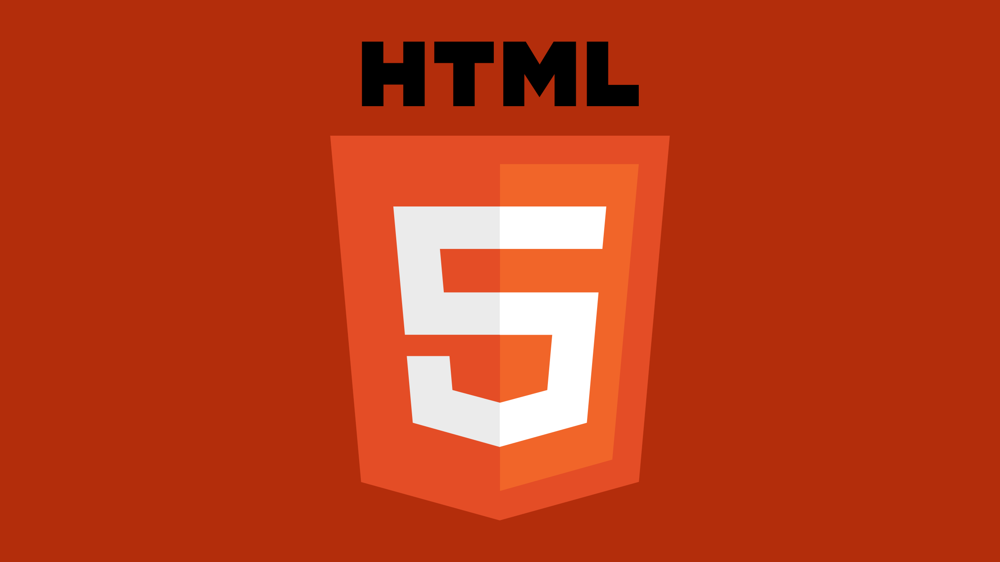
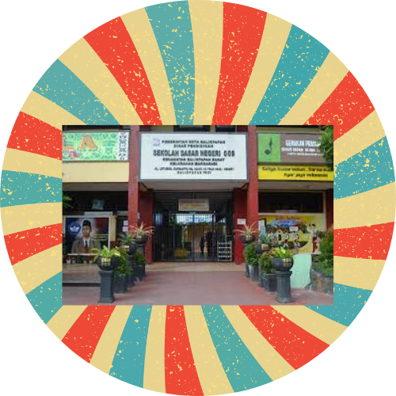
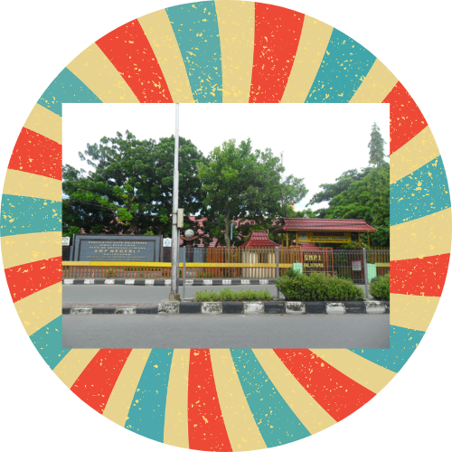
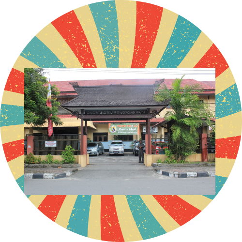
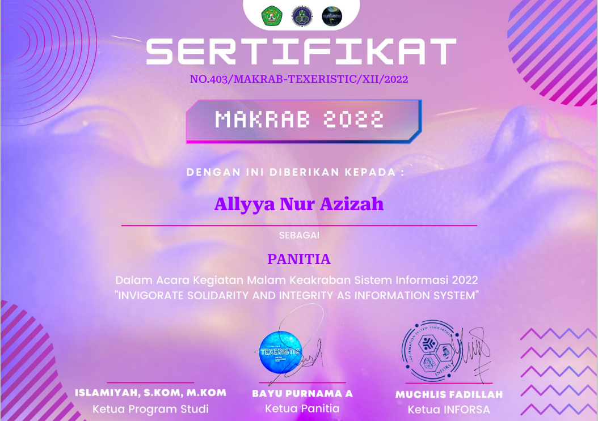
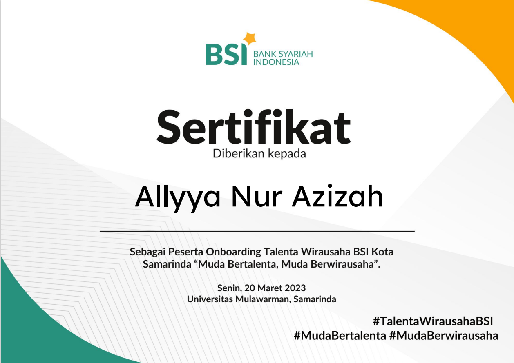

About Me
Saya Allyya Nur Azizah, seorang mahasiswa di Universitas Mulawarman yang sedang menempuh perjalanan pendidikan di Program Studi Sistem Informasi. Keberadaan saya di dunia perkuliahan didorong oleh keyakinan bahwa teknologi dan informasi memiliki peran sentral dalam mengubah dunia. Inspirasi inilah yang mendorong saya untuk mengejar karier di bidang ini, dengan harapan dapat berkontribusi dalam menghadapi tantangan dunia yang semakin kompleks dan dinamis. Saya selalu bersemangat untuk memperluas pengetahuan saya dalam bidang Sistem Informasi, baik melalui perkuliahan, proyek-proyek praktikum, maupun kegiatan-kegiatan ekstrakurikuler yang relevan. Saya percaya bahwa setiap tantangan adalah peluang untuk tumbuh dan berkembang. Oleh karena itu, saya berkomitmen untuk terus belajar dan mengembangkan keterampilan saya dalam bidang Sistem Informasi.
Saya selalu mencari cara baru untuk memecahkan masalah dan meningkatkan efisiensi. Inovasi adalah kunci dalam memajukan dunia teknologi.
MY SKILL SET

UI / UX
Prototype Designer

HTML
Exceeding Expectations

Data Analyst
I love playing with data
Education History
Saya bersekolah dari SD hingga SMA di kota Balikpapan. Untuk education history saya ialah :

SD Negeri 009 Balikpapan
Year : 2010-2016

SMP Negeri 1 Balikpapan
Year: 2016 - 2019

SMA Negeri 1 Balikpapan
Year: 2019 - 2022
Currently : Universitas Mulawarman
Year: 2022 - now



